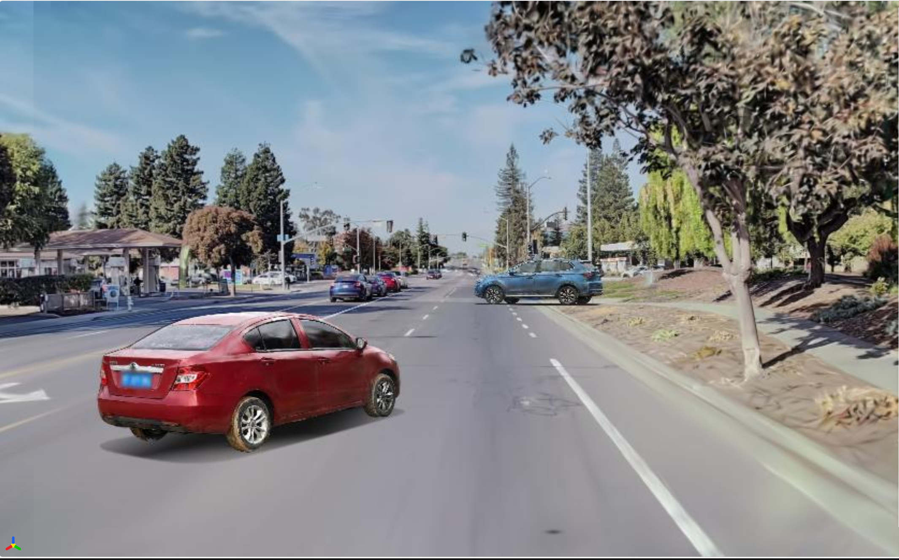

Dynamic reconstruction
Scene rendering with separately controllable moving vehicles.
MSc Thesis / Autonomous Driving
Supervisors: Prof. Pedro U. Lima and Dr. Pedro Monteiro

01 / Overview
Validating a driving policy requires closed-loop simulation, in which the policy acts on its environment and receives the consequences as its next observation. Replaying a recorded log cannot provide that. Photorealistic reconstructions of a real drive stay faithful only along the recorded path, with the vehicles moving through it baked into the background.
This thesis builds a closed-loop simulator from a single recorded drive, using an arbitrary camera rig and a consumer GPU. A 3D Gaussian Splatting reconstruction represents each moving vehicle as a separately controllable rigid node, posed by a multi-camera tracker and a kinematic fit solved before training. A pseudo-view loop extends the scene off that path, rendering it from laterally shifted trajectories, cleaning those renders with a reference-conditioned diffusion model and banking them as training data, so the generative component is spent offline.
Thirteen WayveScenes101 scenes were trained under one configuration. The final models reached a median PSNR of 24.12 dB on held-out frames, while the vehicles rendered 4.2 to 8.6 dB below the frame around them. KID rose with lateral offset in every scene, and the pseudo-view bank cut the 3 m penalty in 14 of 16 curves, at a cost on the recorded path. The simulator rendered one camera at 19.7–27.7 frames per second, above the 10 Hz recording rate.
02 / Supplementary material
The project-page link is live. Demonstration clips will be added here after thesis delivery.
Clips in preparation
This section is reserved for the reconstruction, off-path rendering, and closed-loop simulation videos.
Scene rendering with separately controllable moving vehicles.
Laterally shifted trajectories and the pseudo-view loop.
Vehicle control inside the reconstructed driving scene.